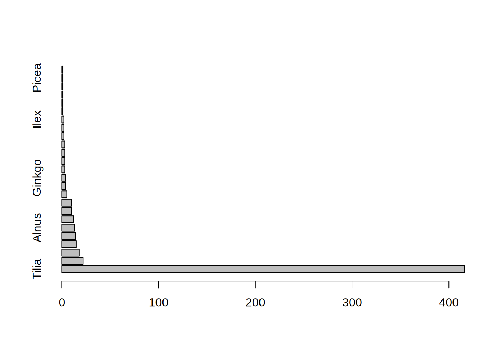
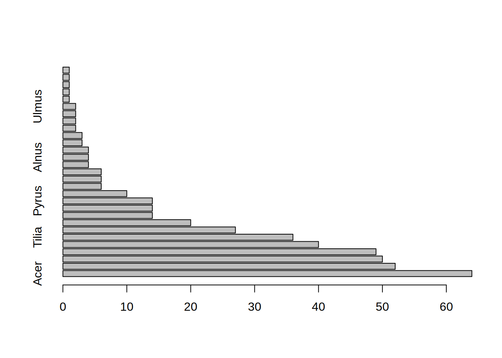
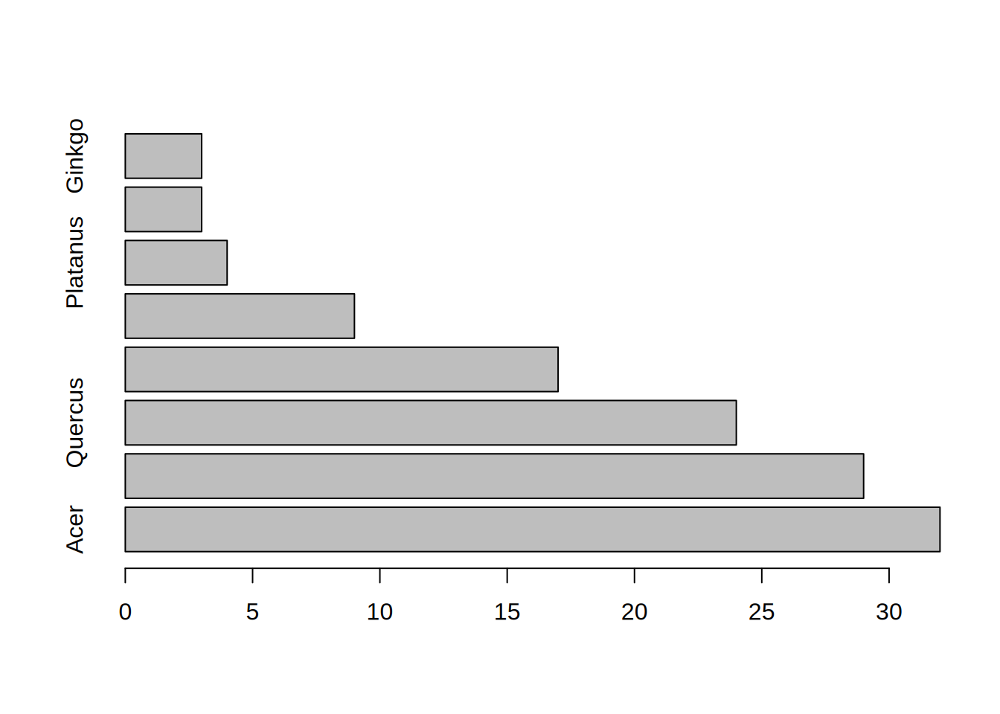

trees = read.csv("../data/muenster_trees.csv")
library(vegan)
library(tidyverse)
# Kontingenztabelle
cont = table(trees$district, trees$species)
cont_df = as.data.frame.array(cont)E08: Biodiversity
Bearbeite die folgenden Fragen mit der Datei muenster_trees.csv.
Für die Aufgaben nutze das vegan Paket. R Pakete kommen oft mit sogenannten Vignetten - Anleitungen und Erklärungen zu Funktionen. Nutze die Vignette diversity-vegan um die folgenden Aufgaben zu meistern. Weitere Erklärungen und Grafiken auf https://www.rpubs.com/roalle/mres_2019.
Hinweis: Für die meisten Funktionen in vegan wird eine sogenannte community matrix benötigt. Jede Reihe ist ein Bezirk, jede Spalte eine Art. In den Zellen dann entsprechend die Abundanzen. Siehe data(BCI) für eine Formatvorlage.
- Welcher Bezirk hat die diverseste Baumflora? Berechne dazu für alle Bezirke die Alpha Diversität in Form von:
- Species Richness
- Shannon Index.
- Pielou’s Evenness.
species_richness = vegan::specnumber(cont_df)
sort(species_richness, decreasing = TRUE)[1]Aaseestadt
45 which.max(species_richness)Aaseestadt
1 # Shannon index
shannon = vegan::diversity(cont_df, index = "shannon")
sort(shannon, decreasing = TRUE) Pluggendorf Aaseestadt Schlachthof Schützenhof
2.717101 2.673228 2.568181 2.516116
Mauritz-Ost Kreuz Mauritz-West Überwasser
2.492068 2.465932 2.458942 2.422434
Hansaplatz Schloss Josef Hiltrup-Ost
2.402432 2.361773 2.333364 2.327677
Hiltrup-Mitte Düesberg Mecklenbeck Sentrup
2.320083 2.266915 2.253076 2.244315
Herz-Jesu Geist Mauritz-Mitte Bahnhof
2.235766 2.225178 2.201645 2.198826
Uppenberg Kinderhaus-West Handorf Rumphorst
2.178721 2.173103 2.170564 2.156080
Nienberge Gremmendorf-Ost Gievenbeck Angelmodde
2.132541 2.126013 2.125744 2.103345
Kinderhaus-Ost Sprakel Neutor Coerde
2.077545 1.942009 1.900092 1.898854
Aegidii Berg Fidel Hafen Gremmendorf-West
1.882616 1.842371 1.780047 1.702529
Martini Gelmer-Dyckburg Roxel Albachten
1.635990 1.554180 1.522840 1.521810
Wolbeck Hiltrup-West Buddenturm Amelsbüren
1.520262 1.474951 1.433875 1.319029
Dom
1.310277 # Low Shannon: Dom
trees |> filter(district == "Dom") |>
select(species)|>
table() |>
sort(decreasing = TRUE) |>
barplot(horiz = TRUE)
# Medium Shannon: Gievenbeck
trees |> filter(district == "Gievenbeck") |>
select(species)|>
table() |>
sort(decreasing = TRUE) |>
barplot(horiz = TRUE)
# High Shannon: Pluggendorf
trees |> filter(district == "Pluggendorf") |>
select(species)|>
table() |>
sort(decreasing = TRUE) |>
barplot(horiz = TRUE)
## Pilous Evenness
evenness = vegan::diversity(cont_df, index = "shannon") / log(specnumber(cont_df))
sort(evenness, decreasing = TRUE) Hafen Überwasser Pluggendorf Mauritz-Ost
0.8560219 0.8550128 0.8069089 0.8062225
Hansaplatz Schützenhof Handorf Düesberg
0.7890997 0.7722657 0.7661139 0.7445881
Mauritz-West Gremmendorf-Ost Hiltrup-Mitte Josef
0.7379325 0.7355499 0.7300325 0.7249003
Herz-Jesu Hiltrup-Ost Geist Schlachthof
0.7233048 0.7231336 0.7198793 0.7166646
Uppenberg Angelmodde Mecklenbeck Kinderhaus-Ost
0.7156200 0.7143447 0.7089482 0.7055827
Aaseestadt Mauritz-Mitte Rumphorst Nienberge
0.7022499 0.7021684 0.6975253 0.6899100
Sprakel Neutor Coerde Kinderhaus-West
0.6854441 0.6853134 0.6848667 0.6837843
Berg Fidel Kreuz Sentrup Bahnhof
0.6803312 0.6684772 0.6598601 0.6288635
Schloss Gievenbeck Aegidii Gelmer-Dyckburg
0.6279307 0.6190307 0.6004209 0.5739112
Gremmendorf-West Martini Hiltrup-West Albachten
0.5683181 0.5373551 0.5319761 0.5168422
Wolbeck Buddenturm Roxel Amelsbüren
0.4993435 0.4960866 0.4730967 0.4403027
Dom
0.4070603 trees |> filter(district == "Hafen") |>
select(species)|>
table() |>
sort(decreasing = TRUE) |>
barplot(horiz = TRUE)
- Berechne die Beta Diversität der Bäume Münsters. (Sørensen index of dissimilarity)
beta = vegdist(cont_df, binary = TRUE)
mean(beta)[1] 0.3226524- Berechne die Gamma Diversität der Bäume Münsters.
ncol(cont_df)[1] 67length(unique(trees$species))[1] 67- In welchen Bezirken Münsters stehen endemische Baumarten? (
vegannicht nötig)
Was ist ein Endemit/ eine endemische Art? Endemiten sind Arten, die lediglich in einem eng umgrenzten Gebiet oder in einer bestimmten Region vorkommen. Quelle
# Noetige Schritte: Welche Baumarten kommen in lediglich einem Bezirk vor?
# Wenn diese Info da ist, welche Bezirke sind das.
# Anzahl interessiert nicht, lediglich "kommt vor" / "kommt nicht vor"
endemic = cont_df > 0
# in wie vielen bezirken kommt die art vor?
colSums(endemic) == 1 Abies Acer
TRUE FALSE
Aesculus Ailanthus
FALSE FALSE
Alnus Amelanchier
FALSE FALSE
Betula Carpinus
FALSE FALSE
Castanea Catalpa
FALSE FALSE
Catalpha Cedrus
TRUE FALSE
Celtis Cercidiphyllum
FALSE FALSE
Chamaecyparis Cladrastris
FALSE TRUE
Cornus Corylus
FALSE FALSE
Crataegus Cryptomeria
FALSE TRUE
Davidia Decaisnea
TRUE TRUE
Euonymus Fagus
FALSE FALSE
Fraxinus Ginkgo
FALSE FALSE
Gleditsia Ilex
FALSE FALSE
Juglans Juniperus
FALSE FALSE
Koelreuteria Laburnum
FALSE FALSE
Larix Liquidambar
FALSE FALSE
Liriodendron Magnolia
FALSE FALSE
Malus Malus-Hybride
FALSE FALSE
Mespilus Metasequoia
TRUE FALSE
Metasequoia glyptostroboides Nyssa
FALSE FALSE
Parrotia Paulownia
FALSE FALSE
Picea Pinus
FALSE FALSE
Platanus Populus
FALSE FALSE
Prunus Pseudotsuga
FALSE TRUE
Pterocarya Pyrus
FALSE FALSE
Quercus Robinia
FALSE FALSE
Salix Sambucus
FALSE TRUE
Sequoiadendron Sophora
TRUE FALSE
Sorbus Taxodium
FALSE FALSE
Taxus Thuja
FALSE FALSE
Tilia Tsuga
FALSE FALSE
Ulmus Viburnum
FALSE TRUE
Zelkova
FALSE endemic = endemic[ ,colSums(endemic) == 1]
# Nur die districts behalten bei denen mindestens ein TRUE in der Zeile steht
rowSums(endemic) Aaseestadt Aegidii Albachten Amelsbüren
2 0 0 0
Angelmodde Bahnhof Berg Fidel Buddenturm
0 1 0 0
Coerde Dom Düesberg Geist
0 0 0 1
Gelmer-Dyckburg Gievenbeck Gremmendorf-Ost Gremmendorf-West
0 1 0 0
Hafen Handorf Hansaplatz Herz-Jesu
0 0 0 0
Hiltrup-Mitte Hiltrup-Ost Hiltrup-West Josef
0 0 0 0
Kinderhaus-Ost Kinderhaus-West Kreuz Martini
0 0 2 0
Mauritz-Mitte Mauritz-Ost Mauritz-West Mecklenbeck
0 0 1 1
Neutor Nienberge Pluggendorf Roxel
0 0 0 0
Rumphorst Schlachthof Schloss Schützenhof
0 0 2 0
Sentrup Sprakel Überwasser Uppenberg
0 0 0 0
Wolbeck
0 endemic_districts = endemic[rowSums(endemic) > 0,]
# Auf der Ursprungstabelle:
Gruppe = trees %>%
group_by(district, species) %>%
summarise(count = n())
arten_einzelner_bezirk = Gruppe %>%
group_by(species) %>%
filter(n() == 1) %>%
select(species, district)
# Weitere Moeglichkeit
## Count the unique districts per tree species,
## Where is this == 1?
endemic_species = trees %>% group_by(species) %>%
summarise(ndistricts = length(unique(district))) %>%
filter(ndistricts == 1)
trees %>% filter(species %in% endemic_species$species) %>%
pull(district) %>% unique()[1] "Geist" "Mecklenbeck" "Gievenbeck" "Kreuz" "Bahnhof"
[6] "Mauritz-West" "Schloss" "Aaseestadt"